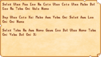
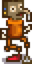
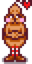
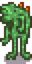

Secrets
This page lists many of the Secrets discovered in Stardew Valley.
Recurring Easter Eggs
There are a few Easter eggs that are recurring or interlinked in Stardew Valley.
Hats
Hats can be placed on...
- Children (of toddler age), horses, cats, and dogs. They can be removed by holding another hat and clicking on them again; that will pop off the old hat, but won't place the new hat unless you do it again.
- Rarecrow 3 (Alien). They can then be swapped with another hat, but can only be fully removed by breaking the rarecrow which drops both items.
- Sea urchins in fish tanks by holding the hat and clicking the fish tank. They can be removed by opening the fish tank inventory and taking the hat.
- Mannequins and Cursed Mannequins by holding the hat and clicking the mannequin.
Lucky Purple Shorts
Mayor Lewis' lucky purple shorts have a number of secrets.
- Putting them in the Luau soup gets a unique response from the Governor and Lewis.
- Putting them in the Stardew Valley Fair grange display disqualifies the player, and Lewis gives the player
 750 star tokens as a bribe to keep his secret. Marnie also gives unique dialogue at the Fair after seeing the shorts in the display.
750 star tokens as a bribe to keep his secret. Marnie also gives unique dialogue at the Fair after seeing the shorts in the display. - Tailoring them with a gold bar produces Trimmed Lucky Purple Shorts. These are equivalent to the Lucky Purple Shorts for completing the quest or triggering some of the other secrets, but it can also be worn by the player for an amusing reaction from Marnie and Lewis.
- Giving Lewis Trimmed Lucky Purple Shorts to complete the "Mayor's Shorts" quest while he is visiting Ginger Island will cause him to wear them as beach attire any time he visits the island again for the next 28 days. This cannot be done with normal Lucky Purple Shorts.
- Attempting to gift them to Marnie gives unique dialogue.
- Placing a staircase in Lewis' bedroom gives access to a secret maze room with these shorts at the end. Attempting to pick up the shorts will spawn a cursed Lucky Purple Shorts that slowly attacks the player and is immune to attacks. This process is repeatable to obtain multiple shorts.
- Putting them in the tackle slot of a fishing rod changes the bobber style to a unique Lucky Purple Shorts bobber. If placed in the first slot of an Advanced Iridium Rod, the shorts prevent tackle in the second slot from losing durability. This cannot be done with Trimmed Lucky Purple Shorts.
- Lucky Purple Shorts can be placed into Fish Tanks as a decoration item. This cannot be done with Trimmed Lucky Purple Shorts.
Dove Children
Turning children into doves unlocks several Easter eggs.
- You may receive a mysterious telephone call: "You place the receiver to your ear, and are met with a roiling, abrasive static. But wait... beneath it all, you can make out something else... an otherworldly voice... 'Y-O-U H-A-V-E F-O-R-S-A-K-E-N U-S'". This no longer happens once you unlock the cursed doll spawn below.
- Watching TV on Fall 26 (the day before Spirit's Eve) and choosing "???" will show an Ancient Doll on the TV screen with an eerie message ("You've brought this upon yourself... now I'm free... Hee hee hee!"), and an Ancient Doll will pop out of the TV. Thereafter, for every child the player has turned into a dove, a cursed Ancient Doll will fly around and attack them in front of the Dark Shrine of Selfishness. When slain, it will turn into a large black bird and fly away. Exiting and re-entering the Witch's Hut will respawn the doll. Killing this doll counts toward the Monster Eradication goal of killing 200 bats, and awards 20 Combat XP.
- On the Four-Corners Farm, players may catch an Ancient Doll once while fishing.
- If you've turned multiple children into doves, there's a 15% chance they'll fly past in formation at the Summit.
- Doves may appear at a Bird House placed on the farm after using the Dark Shrine of Selfishness.
Bad at Music
In multiplayer mode, if a player's randomized unique multiplayer ID (only editable in the save file) is divisible by 111, music they produce will sound off:
- The music emote will produce a random off-tune strum instead of one of the normal melodies.
- The piano in Elliott's Cabin will play off-key tones (F4, C5, D5, G#5) instead of the usual ones (B4, D#5, E5, F#5), and the other piano Easter egg won't trigger.
Feast of the Winter Star
If one of the following items is placed on a table or a long table before the night of Winter 24, the eve before Feast of the Winter Star, it will be replaced with a Mystery Box the next morning. If multiple items are placed on multiple tables, only one milk and one cookie will be replaced.[1]
Intro Screens
Logo
Clicking on the ConcernedApe logo during the loading screen will cause the sunglasses (if present) to disappear and the eyes to open. A duck/splat sound will also be heard.
A rare green version of the ConcernedApe logo can occur 2% of the time[2] when clicking on the logo on the loading screen.
Tip Messages
The game keeps track of how many times you launch it, and shows friendly messages in the bottom-left corner of the ConcernedApe logo screen based on that number.
| Messages | |
|---|---|
| Times Launched | Message |
| 2 | Welcome back! |
| 3 | Plug in an Xbox One or Xbox 360 controller to activate game pad mode. |
| 4 | Tip: Giving gifts is a good way to make friends with the residents of Stardew Valley. |
| 5 | Tip: Shift-click to purchase 5 items at a time. |
| 6 | After upgrading your hoe or watering can, hold down the tool button to increase the area of effect! |
| 7 | Tip: Right-click to use a weapon's special move. |
| 8 | Watch TV shows to learn useful tips, cooking recipes, and more! |
| 9 | The traveling merchant visits Stardew Valley twice a week. She sells a wide variety of goods, often at exorbitant prices! |
| 10 | Thanks for playing! |
| 15 | Elliott's latest sentence: (randomly constructed sentence) |
| 20 | ♡ |
| 30 | Challenge: Beat Journey Of The Prairie King without dying. |
| 100 | You've started the game 100 times. |
| 1,000 | You've started the game 1000 times! |
| 10,000 | You've started the game 10,000 times! I'm impressed. -Ape |
Title Screen
Note that these do not work in Chinese.
- Clicking the letter "E" in the game name ten times will show an alien open a door behind the letter. It will smile and wave for two seconds before it fades away.
- Clicking the leaves ten times will cause three Junimos to appear in the logo and wave.
- Clicking the lower right screw on the letter "W" ten times will cause several butterflies to appear.
- Clicking the bottom-left corner of the title box a few times will pick up a little happy face. You can click the hole in the R to place it, which will cause foliage to appear around the title box and parrots to fly out of it.
- If you use a controller, pressing B on Xbox or O on PS4 will cause the clouds around you to move at a rapid pace. Only works where the two birds are flying, and stops upon the menu coming down.
Character Creation
Special Characters
When entering "Name", "Farm Name", or "Favorite Thing" on the Character Creation menu, certain keys produce special sounds and/or symbols.
- Pressing the following keys will produce special sounds.
- Pressing
<produces a "ding" sound - Pressing
$produces a "plink" sound - Pressing
*produces a "stone hit" sound - Pressing
=produces a "pop" sound - Pressing
+produces a "squish" sound
- Pressing
- Pressing the following keys will produce special characters.
- Pressing
<produces♡, a heart - Pressing
>produces▷, a right triangular arrow - Pressing
@produces◁, a left triangular arrow - Pressing
$produces⌾, a double circle - Pressing
*produces💢, the "anger" symbol common in Japanese media - Pressing
=produces☆, a star
- Pressing

- Pressing controller buttons also produces special sounds and/or symbols.
Item Spawn Cheat
PC/Mobile only: naming your character using an internal item ID in brackets will give the corresponding item whenever an NPC mentions your character by name. For example, entering [645][499][(O)163] will give an Iridium Sprinkler, Ancient Seeds, and a Legend. Since this works with qualified item IDs ([(O)163] in the preceding example), it can be used to spawn furniture, weapons, etc. This exploit also works with naming children and animals.
When using this cheat, one of five random messages will pop up in the chat window:
- ConcernedApe: What kind of a name is that? Seems fishy...
- Mr. Qi: Easy <item>, huh? I'm disappointed, kid. I thought you wanted to beat this game fair and square?
- *Grandpa is shaking his head... 'I built this farm the old fashioned way, not with unlimited <items>...'
- ConcernedApe is mad that you're cheating...
ConcernedApe: I'm not actually mad... have fun. - Calling all cars! Calling all cars! We've got a/an <item> thief on the loose!
Favorite Thing
Entering "ConcernedApe" as the favorite thing when creating a character results in some additional text when consuming a Stardrop.
Entering anything containing "Stardew" as the favorite thing when creating a character results in the additional text "You feel an unwavering connection to the valley itself." appearing when consuming a Stardrop. Note that the "S" in "Stardew" must be capitalized.
In-Game Menus
Shipping Screen
A few rare animations can be seen in the background of the Shipping screen at the end of the day depending on certain conditions.[3]
- Numbers over 999,999 will overflow on the blank space and will move up and down in a wave pattern.
- On the 24th of Winter, Santa Claus can be seen with a few reindeer crossing the top of the screen in his sleigh.
- If it is not the 27th and it did not rain, there is a small chance of a UFO crossing the top of the screen.
- Idling on the screen for long enough will cause it to appear more often.[4]
- If it is the 27th and it did not rain, there is a small chance of a full moon appearing at the top right of the screen. Clicking it 11 times will cause the man in the moon to reveal himself.
Lonely Stone
The lonely stone is not an area, but it has a location on the Stardew Valley map. Upon clicking the lonely stone on the map, a rock sound effect will play.
The lonely stone also hasn't been mentioned by any villagers/characters nor is there any lore about it mentioned by ConcernedApe or hidden in the game's files.
Gift Log
When you have at least four hearts of friendship with a character, clicking their sprite in the gift log (accessed from the social tab by clicking their entry) will play a sound and show a special animation (different for each character) for a few seconds.
Skills Screen
Clicking the Junimo in the lower left corner multiple times makes plants appear in the corners of the square. Activation of this secret is then stored in the player's save file and will always show upon opening the menu, even after relaunching the game.
Secret Items
Locked Boxes

The first letters in the Museum's incomprehensible Lost Book form these words:
- SUPER CUCUMBER TOWN
- DUCK MAYO SALOON
- STRANGE BUN TOY BOX
Three secret statues can be found by placing items in locked boxes around the valley per these instructions:
| Image | Name | Requirement |
|---|---|---|
 |
??HMTGF?? | Place a Super Cucumber in the brown box located in the fenced area north of the Blacksmith. |
 |
??Pinky Lemon?? | Place a Duck Mayonnaise in the partly hidden metal box in the back room of the Stardrop Saloon. |
 |
??Foroguemon?? | Place a Strange Bun in the chest in Vincent's room at 1 Willow Lane. |
The box behind JojaMart (to the northeast) doesn't do anything.
Galaxy Sword
After finding and donating all four Dwarf Scrolls to the Museum, the player receives the Dwarvish Translation Guide. If the player proceeds to the Graveyard, one of the previously unreadable tombstones can now be read.
| “ | “You translate the dwarvish: Stand between the pillars three With gift as precious as the sky: A rainbow forged from land, not sea Then galaxies will heed your cry” |
This points the player towards the Desert and the set of three pillars to the Northeast. Stepping into the center of the pillars while holding a Prismatic Shard will cause the shard to be transformed into the Galaxy Sword. (Note that finding the Dwarf Scrolls is not needed to obtain the Galaxy Sword.)
Junimo Plush
The Junimo Plush is a unique piece of furniture. It can be found by shaking a bush in the northwest corner of Pelican Town on the 28th of any season at exactly 12:00pm.
Strange Capsule
After a Strange Capsule appears and breaks open, there's a 1% chance of glimpsing a dark creature wave after dark at the Bus Stop, or run behind trees and bushes in Pelican Town (Near the tree south of 1 Willow Lane, in the bush below 2 Willow Lane, and in the bushes next to the bridge leading to the Beach).
The dark creature
The dark creature
The dark creature running
Items found when fishing
Please see the items' individual pages for location images.
| Image | Name | Location |
|---|---|---|
| 'Boat' | Fish at the southwest spot of the Beach Farm. | |
| Decorative Trash Can | Fish in the fountain west of the Community Center in Pelican Town. This item can also be found in the Furniture Catalogue. | |
| Foliage Print | Fish in the river at the west of Ginger Island North. | |
| Frog Hat | Fish in Gourmand Frog's cave on Ginger Island. | |
| Gourmand Statue | Fish in the Pirate Cove on Ginger Island. | |
| Iridium Krobus | Fish at the southernmost point of Cindersap Forest near the entrance to the Sewers with a fishing level of at least 15. | |
| Lifesaver | Fish in the backroom of Willy's Fish Shop. | |
| 'Physics 101' | Fish in the Volcano Caldera. | |
| Pyramid Decal | Fish in the southern pond in the Calico Desert. | |
| Squirrel Figurine | Fish at the west edge of the river in an area on Ginger Island accessible through the volcano. | |
| 'Vista' | Fish in the pond outside the Spa. (Cannot be obtained in Winter.) | |
| Wall Basket | Fish in the Secret Woods pond during any season. |
Meowmere
If the player throws an Ancient Doll into the lava pool in floor 100 of the Mines, or in the lava next to the chest at the Forge on Ginger Island, a bone serpent from Terraria will rise from the pool and give them the Far Away Stone. Placing this item on the plant pedestal found in the basement of Wizard's Tower will open up a portal, where a cat steps in and gives the player the Meowmere weapon.
World
Skull Cavern Plaques
The plaques that can occasionally be found on the walls of the Skull Cavern have been found to contain text encoded by a cipher.[5]
The plaques that are found on the rough walled levels have been deciphered to give the following.
| “ | “we are cursed too much iridium” |
This may be a reference to the Purple Slimes that can drop Iridium Ore that are frequently found in large numbers at these levels.
The plaques on the walls of the levels inhabited by Mummies has been deciphered to give the following:
| “ | “wizard sealed us in this prison until the day a hero puts us to rest” |
This may or may not refer to the Wizard who lives in Cindersap Forest.
Volcano Plaque
The plaque above the Forge has been translated [6] to say:
| “ | “ait otusnats tomu htam doo smol din mopu o uy hamu duuonh snau” |
which is Dwarvish for:
| “ | “our ancestors came from the sky but made a new home beneath stone” |
Old Master Cannoli
A Stardrop can be obtained from Old Master Cannoli in the Secret Woods, in exchange for a Sweet Gem Berry.
Rare Dialogue
When choosing "Supplies Shop" in Marnie's Ranch, the text under Marnie's portrait normally reads "Animal supplies for sale!" But there is a 0.01% chance for the text to read
| “ | “*sigh*... When the door opened I thought it might be Lewis.” |
When entering Robin's or Marnie's shop, there is a chance for a dialogue bubble to pop up with them saying
| “ | “Lew...? Oh...” |
When entering Pierre's shop, there is a chance for a dialogue bubble to pop up with him saying
| “ | “Did you remember your wallet?” |
When entering the Stardrop Saloon, there is a chance for a dialogue bubble to pop up with Gus saying
| “ | “You look like you need a drink.” |
When entering the Museum, there is a chance for a dialogue bubble to pop up with Gunther saying
| “ | “You smell like dirt... good!” |
Elliott's Piano
There are two secrets with the piano in Elliott's Cabin:
- When Elliott is working at his desk, playing the first eight notes of the Stardew Valley Overture on the piano will make Elliott turn towards the player with a heart emote. (This doesn't affect his friendship with the player.) If you label the piano keys 1–4 from left to right, the tune can be played with these notes at any speed: 2432 3421.
- See also the bad at music secret.
Beach Creature
Very rarely, a green creature may appear south of the main docks at the beach. There's no way to interact with the creature; after a short while, it'll swim south and disappear off-screen.
There's a roughly 0.06% chance per second (0.001% per game tick) that the creature will try spawning in a random tile near the docks (see spawn area below). The creature will only spawn if that random tile is open water, and there's a vertical line of open water between that tile and the bottom of the map, which significantly reduces the likelihood. There's no limit to the number of creatures that may spawn, but more than one creature at once is extraordinarily rare.
The same creature can be seen in Krobus' 14 heart event, in which it carries the shadow person on its tentacles (note that in this event, the creature is not a random occurrence like the one found during regular gameplay).
The creature in-game.
The creature's animation.
The creature's spawn area.
Dark Creature
There is a small random chance to see a large dark creature at night in Pelican Town, Cindersap Forest, the Backwoods, or the Secret Woods. This creature is larger than the dark creature that may appear after the Strange Capsule event. There is a very small random chance that this creature will leave a footprint behind.

Slimes
- Slimes can be hatched in odd places using a Slime Incubator, including Pelican Town or the Railroad. Slimes hatched in the town are known to interact with the townsfolk, including greeting them by name and having the townsfolk greet them back. Note that this doesn't work in all locations, in some places slimes will be removed overnight.
- Slimes can also be hatched inside the Farmhouse. If you are married, your spouse may react to the slime with various funny dialogue while trying to kill it.
Random events
See Random Events.
Shrine of Illusions
Using the Shrine of Illusions to add item spawn codes to your character name will randomly show one of these chat messages:
- ConcernedApe: What kind of a name is that? Seems fishy...
- Mr. Qi: Easy {{item name}}, huh? I'm disappointed, kid. I thought you wanted to beat this game fair and square?
- *Grandpa is shaking his head... 'I built this farm the old fashioned way, not with unlimited {{item name}}...'
- ConcernedApe is mad that you're cheating...
ConcernedApe: I'm not actually mad... have fun. - Calling all cars! Calling all cars! We've got [a/an] {{item name}} thief on the loose!
Summit
- Achieving perfection in Mr. Qi's walnut room unlocks access to the Summit. When you visit it, there's a chance you'll see something fly past in the distance:
- 25% chance of a seasonal bird;
- else if you've turned multiple children into doves, there's a 15% chance they'll fly past in formation;
- else if you've seen Harvey's 8-heart event, there's a 10% chance a jet flies past;
- else if you've seen Maru's 10-heart event, there's a 5% chance that MarILDA will fly past.
- Santa Claus may show up on Winter 25th.
- Attempting to access the Summit before achieving perfection triggers a cutscene in which Mr. Qi scolds the player and pushes them off the Summit.
Chat
- Entering /cheat, /cheats, /imacheat, /money, /showmethemoney, /freegold, /debug, or /rosebud shows a message from ConcernedApe: "ConcernedApe: Nice try..."
- Entering /ca, /ape, or /concernedape shows a message from ConcernedApe. This message is shown the first time: "Hello. I hope you're enjoying your new life here. Take care!" Doing it again results in this message: "ConcernedApe is hard at work..."
- Entering /qi shows a message from Mr. Qi. The first time it says: "Mr. Qi: Hey, kid. Yeah, I'm here. What'd you expect?" The second time, this message is shown: "Mr. Qi: Hey... keep up the good work, and never stop striving for success! I'll see you soon, kid..." Thereafter you'll receive the message: "Mr. Qi is away".
Iridium Stackmaster Trophy
If playing in English only: When the player picks up items, a stack is displayed on the left of the screen. Having the stack reach 1 million of the same item will award the player with the "Secret Iridium Stackmaster Trophy Achieved" message in chat, followed by another message from Mr. Qi that says: "Qi:💢slow clap💢... Congratulations, kid. Ya did it. Now, on to the next challenge!" [7]
Throughout the process, messages in chat will hint at the player that they are reaching the secret. They appear as follows:
- 100,000 items: "..."
- 200,000 items: "......"
- 250,000 items: "Shooting for a million?"
- 500,000 items: "......................."
Trivia
In the first Stardew Valley Cup live event, ConcernedApe said that there's one secret that he didn't think anyone ever found. He said that:
"I guess you might say a message or something. And actually the thing is the message is not even really relevant anymore. It was like originally revealing something that's like actually not even true anymore. But it's still I don't think anyone has found it, and I don't know if anyone ever will. Because it's extremely obscure to find it."
References
- ↑ See TitleMenu::receiveLeftClick in the game code.
- ↑ See ShippingMenu::update in the game code. The code states that the UFO cannot occur when the game date is 28, but the date changes internally before the shipping screen is displayed.
- ↑ In Menus/ShippingMenu::update, there is a 0.001% chance per frame that the UFO will appear and cross the screen.
- ↑ https://www.reddit.com/r/StardewValley/comments/4buz5l/cave_wall_plaque_glyph_symbol_translation_attempt/
- ↑ https://www.reddit.com/r/StardewValley/comments/kjvjz0/15_spoilers_here_mural_glyph_translation/
- ↑ See HUDMessage::numbersEasterEgg in the game code.
History
- 1.1: Added secrets: leaf clicking on title screen.
- 1.3: Added secrets: Lucky Purple Shorts Luau response. Removed item ID naming exploit from console versions.
- 1.4: Added secrets: Trimmed Lucky Purple Shorts, full moon, and title screen letter "W" clicking. Fixed entire stack being consumed bug; fixed buggy favorite thing dialogue; fixed wallpaper working to obtain the Galaxy Sword.
- 1.5: Added secrets: Lewis wearing Trimmed Lucky Purple Shorts on Ginger Island, sea urchin hats, strange capsule secret after it breaks, title screen happy face, the Shrine of Illusions item spawn code messages, and summit fly-bys.
- 1.6: Added secrets: Meowmere, Lewis' secret basement, Lucky Purple Shorts bobber style, green logo screen, hats on cats & dogs, Qi's pre-Perfection Summit cutscene, sacrificial items on Feast of the Winter Star eve. Removed exploit where the Trimmed Lucky Purple Shorts could also be acquired by placing a staircase into the player's pants slot.
- 1.6.4: Added secrets: Lucky Purple Shorts Fish Tank decoration.
- 1.6.9: Added secrets: Iridium Stackmaster Trophy, Dark Creature.